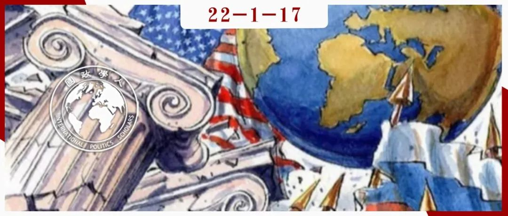

收录于合集 #《国际关系前沿》2022年第1期 23个

作品简介 ****
作者： Bernardo Teles Fazendeiro，科英布拉大学经济学院助理教授。
编译： 穆若彤（国政学人编译员，中国人民大学PPE）
来源： Bernardo Teles Fazendeiro. Keeping a Promise: Roles, Audiences and Credibility in International Relations. International Relations , Vol.35, Issue 2, pp. 299-319.
https://doi.org/10.1177/0047117820961816
归档： 《国际关系前沿》2022年第1期，总第40期。

导读
角色理论是当代国际关系研究中分析外交政策的经典理论范式，在当代融合了建构主义并成为建构主义国际关系理论与传统国际关系理论对话的重要领域。角色理论跨越学科的理论特点为其提供了更丰富的观察视角，使其得以更综合的方式分析政策的制定与实施。同时，角色理论搭建起了国内- 国际的分析框架，将角色的互动拓展到了更广泛的范围中。
本文从角色理论的分析框架出发，分析了表演者拒绝他人设定的原因，同时超越了以身份认同和本体论安全为中心的解释方法，而是将解释建立在公共可信度之上，并展示了受众和角色对非自由主义政权的重要性。
在乌兹别克斯坦政府捍卫承诺与拒绝俄罗斯的设定的案例分析中，本文从保持角色可信度的角度分析了当局制定政策的依据与实施策略。乌兹别克斯坦独立后, 在社会生活的各个领域大规模进行“去俄罗斯化”，乌兹别克斯坦前总统卡里莫夫认为, 与土耳其等伊斯兰国家发展友好合作关系, 既有利于维护国内稳定, 也有利于乌兹别克斯坦民族的振兴和国家的发展；与美国等西方国家发展，有利于寻求资金与技术援助，帮助乌兹别克斯坦取得更快的发展，从这种意义上说，“去俄罗斯化”就成为了乌兹别克斯坦当局向国内与国际社会展现角色立场与实现角色“积极独立”设定的一种重要方式，也印证了保持公共可信度对于角色选择设定的重要影响。
摘要
国家、政府和领导人往往拒绝其他人的角色设定（role prescriptions）。他们坚持自己的角色并将其认为是他们在既定国际社会中的核心目标和主要承诺。通过运用角色理论的主要原则，本文探讨了表演者拒绝他者设定的原因，包括其在谈判上的尝试。本文认为，这些设定并不是因为追求自我认同或本体论安全而被拒绝的，拒绝这些设定的立场更多是为了捍卫主要角色的可信度，这是表演者对（国内和/或国际）受众做出的核心承诺。为了说明这一论点，本文论述了乌兹别克斯坦政府在20世纪90年代面对俄罗斯的他者角色设定（altercasting）时试图保持可信度的做法。
编译
01
角色理论：关键概念与论点
基于相互理解的角色的社会互动提供了一个很有希望的视角，通过这一视角可以概念化出现矛盾和拒绝设定的原因。 大多数角色理论家将互动视为身份建构的方式。基于社会化和“角色定位”的共同概念，这一主张认为，从表演者展示角色的那一刻起，一个反角色（counterrole）就同等地被提出。
角色为表演者及对手在其希望被认可的方式上提供了线索。此外，互动只有在兼容的角色被认可的情况下才能进行，否则就可能导致冲突。例如，成为“世界革命堡垒”（bastion of world revolution）的政府与承诺成为“现状捍卫者”（defenders of the status quo）的政府很难相容。缺乏互补性反过来会导致潜在的错误认识，以至于无法找到兼容的角色。
他者角色设定对角色定位很重要，这可以理解为一种“自我展示”：一名表演者试图让另一名表演者“创造”一个符合该表演者对国际政治渴望相符的角色。换言之，它指的是语言或非语言的暗示：一方向另一方发出信号，要求另一方扮演与自己“互补”的角色，这些暗示与说服、施压和公开姿态等表现有关，而非强迫或使用暴力。当表演者试图在既定社会秩序中定位自己的角色时，他们可能会受到其他线索或设定的影响。
除了他者角色设定，角色理论家通常从角色概念、线索或设定以及角色表现三个关键概念中得出结论。角色概念是关于表演者为某个角色时所怀有的价值观、规范和思想；线索或设定是他人关于角色应该如何设定的提议和压力；角色表现则关注角色本身作为谈判过程的结果是如何执行的。大多数情况下，表演者通过将自身的概念与他人的设定联系起来制定外交政策。角色理论家指出，“主”角色（如“大国”和“区域大国”）与“辅助”角色（补充和维持主角色的角色，如“平衡者”和“忠实盟友”）如何结合，不仅取决于某个群体如何构思，更取决于角色如何被他者认可。大多数表演者几乎不会随意挑选自己的主要角色，他们的选择往往基于“他者”，更重要的是，“他者如何看待自身的角色定位过程”。在这方面，作为必须公开表明立场的表演者，当局必须能够适应和承认这些设定。在某些情况下，另一方的设定并未纳入整个位置。为了理解这种情形是如何发生的，本文认为，将角色及其表现与可信度和受众联系起来是很重要的。
02
受众，承诺与可信度
作为一种表演性的努力，角色对于权威的可信度也有一定的影响。如果当局未能充分发挥作用，就是承认法律并不可信，受众将不再认真对待当局的承诺。当局经常受到来自国内和国际受众的不同角色的压力，有时会导致几个不相容的立场，从而引发角色冲突和国内竞争。大多数角色理论家将其建立在自我认同和本体论安全的基础上，这些概念假定集体行动者（国家、政府或政党）努力在与他人的关系中获得一致的自我意识。为此，他们假定对集体自我的挑战（假设这种集体自我是存在的）可能通过损害本体论安全从而影响国家认同。这一在国际关系中日益增长的传统强调，国家（或其他在这方面的集体行动者）具有与个人相似的属性，因为它们包含了相对一致的自我意识。
可信度提供了另一种概念化当局坚持履行其职责的原因的方法。 除了一些研究公共外交和核战略的学者外，可信度在国际关系中很少被完全概念化。艾伦·亨利克森（Alan Henrikson）指出，当一个领导人、政府或国家采取的行动或立场明显与以前的行为或立场不符时，尤其是高尚或“利他”的行为或立场，很容易丧失可信度。而问题在于，为何保持可信度很重要，以及保持可信度与角色扮演间有怎样的关系。
能力显然是至关重要的。那些表现出对某一角色的承诺，但在其他方面缺乏扮演该角色的途径的当局很可能会受到怀疑。表演者也可能破坏当局的表演能力（例如实施制裁），但这更多地说明了胁迫，而非试图通过表演进行劝说，正是改变他人设定的必要条件。
可信度还与意在分散不确定性的一致表现有关。由于不存在拥有强制力的全球政府，不确定性渗透在国际政治中，几乎没有国家愿意相信其他国家的承诺。因此，不确定性是军事战略环境以及国际政治无政府状态的一个特征。扮演一个角色，同时可靠地履行角色，有助于分散普遍存在的不确定性。
03
受众，承诺与保持可信度
扮演角色分散了不确定性，但问题仍然存在：当政治当局做出了一系列核心承诺，为什么可信度对他们至关重要？原因有二：（1）从国内角度看，留任问题很重要，如果不是竞争，无法履行承诺可能会增加内部的怀疑；（2） 从国际角度看，缺乏可信度意味着最初的承诺不再可信，增加了不确定性，也限制了当局按照最初的要求执行政策的能力。
就国内受众而言，可信度与议会制度尤其相关。在议会制度中，当局受到内部监督，其政策也会受到系统性质疑，这一假设往往支持了一部分侧重于角色争夺的角色理论。尽管各式各样的议会辩论涉及到角色是否合法，人们考虑得更多的是承诺是否被保留，不遵守承诺使可信度丧失，可能导致这些人在未来的选举中被排除在公职之外。
抛开自由主义的民主不谈，非自由或不自由的政权也依赖于可信度，而不仅仅是镇压。当局依赖于保持特定国内派系对他们的信任，许多派系仍关注他们如何信守——或至少似乎信守——他们的承诺。一旦失去可信度，国内反对者就更容易罢免现任者及其追随者。
尽管当局所扮演的大多数角色都是针对一些国内受众的，但国际受众同样重要。如果当局的表现失败，那么可信度就会进一步降低。为此，保持可信度不仅可以阻止处于他者角色设定中的表演者被限定于一个权威，还可以说服观察者相信国家在履行其职责方面有多么坚定。
可信度往往与合法性有关。合法性广泛涉及治理的道德基础，以及政府本身的“权利”。大多数政治行为体都强调了其统治的合法性，何种政府模式是正确的问题更多关系到一个制度在道德上是否合适。也就是说，合法性作为一个评估绩效的概念具有足够的可塑性。除政府权利外，合法性也被视为“由主流社会道德（无论是国内社会还是国际社会）制定的可接受的行为标准”。从这个角度来看，合法性和可信度都与绩效评估有关，尽管它们的条件不同。
04
拒绝他者角色设定与表演策略
他者的设定在两个条件下会被拒绝。其一，如果角色设定来自重要的他者，即当局认为相关的受众，那么角色设定会产生更大的影响。与常规互动无关的受众不太可能对表演构成主要挑战。其二，为了评估被拒绝的可能性，有必要揭示表演者在国际和国内舞台上的定位或自我定位所依据的主角色和辅助角色。如果主角色和辅助角色同时被他者设定，当局将面临严重的可信度考验，这又导致当局需要对展示承诺和决心具体战略进行部署。
如果当局的主角色和辅助角色同时弱化，那么它很可能会拒绝另一个权威的角色设定，随后运用特定的表演策略来展示承诺。乔治·麦考尔（George McCall）和拉里·西蒙斯（Larry Simmons）在这方面提出了几项措施：当局最初可以否认设定和角色概念之间的不相容性；公开谴责该表演者；放弃关系；或者以缓解冲突的方式容纳辅助角色。
只要国际和国内观众相信角色表现的一致性，否认和谴责的策略即是成功的；如果观众对此保持怀疑，那么放弃这种关系就是展示决心的可行选择。然而，其他策略也许会更加可取，由于当局起初将接受他者角色设定的表演者视作有关受众，是决定获得可信度的重要他者。表演者最终可能成为向其他（国内和国际）受众传达承诺的唯一手段，但问题在于表演者是否有能力采取这样的行动。
上述保持可信度的策略主要是执行性的，但可信度还取决于执行任务的能力。设定不同的表演者必须根据现有的政治、社会和经济能力来判断表演的可行性，国内和国际观众仍须确定被应允的角色是否将履行其承诺。
05
捍卫承诺与拒绝俄罗斯的设定
1.主要角色与辅助角色的概念
在乌兹别克斯坦从苏联独立不久后，卡里莫夫就提供了对共和国承诺角色的详细描述。对于“积极独立”的追求在该国社会传播开来，被证实为一个打击和拉拢乌兹别克斯坦反对派的重要方法。此外，随着多元主义在苏联内部的蔓延，卡里莫夫及其党内同僚成功地加入了反对党的议程。除了国内的受众，卡里莫夫的政治议程也与作为政治与经济上主要受众的俄罗斯有关。苏联解体时，乌兹别克斯坦继续与俄罗斯的经济政策保持距离，承诺实现更大的经济独立。但扮演“积极的独立角色”并不等于回避与俄罗斯或其他大国的合作。
尽管积极独立在国内引起了共鸣，但并非所有反对派成员都对独立以及实现独立方法表示赞同，这在一定程度上解释了乌兹别克斯坦当局为何实施系统性的镇压。少数的当局者承诺担任主要角色，特别是卡里莫夫，他们越来越多地将自己塑造成乌兹别克斯坦独立的保护者。在这种情况下，应用本体论安全或认知失调的前提的价值有限。
除了主要角色外，积极独立还依赖于两个辅助角色：“地位平等的追求者”和“双边主义”，这两个角色都补充和加强了卡里莫夫承诺的表现。
2.俄罗斯施加的角色设定与乌兹别克斯坦对承诺的捍卫
乌兹别克斯坦政府的国内和国际信誉有赖于兑现积极独立的承诺。尽管如此，外部日益激烈的竞争的时机已经成熟，随着俄罗斯试图将前苏联国家转变为忠实的盟友角色，这些国家本应支持俄罗斯的经济和安全特权。
俄罗斯改造其大国角色的决心最初削弱了乌兹别克斯坦政府的辅助作用，卡里莫夫因此面临着重大的信誉考验。他拒绝了俄罗斯的角色设定，并采取了维护信誉的策略，公开谴责俄罗斯当局，最终表明他愿意放弃牢固的关系。作为主要受众，忠实地遵守俄罗斯的特权是一个可行的选择，这本可以带来切实的经济和安全利益。但卡里莫夫已经积极开展活动，让乌兹别克斯坦远离大国纠缠，他需要表现出履行最初承诺的决心。
随着俄罗斯在中亚重新获得更大的优势，卡里莫夫在1999年退出了由俄罗斯领导的集体安全条约（Collective Security Treaty）。相反，乌兹别克斯坦于1999年加入了古阿姆集团（GUAM），这是一个由前苏联国家组成的组织，最初旨在遏制俄罗斯的影响。乌兹别克斯坦政府的做法表明，它将继续扮演其主要和辅助角色，以取代俄罗斯的角色设定，这一决定提高了可信度，但代价却是要永远避开俄罗斯这一重要受众。
3.角色定位过程中的和解
随着普京在2000年成为俄罗斯总统，情况发生了变化。到世纪之交，“积极独立”赢得了美国这一关键受众的信任。尽管普京仍热衷于扮演“大国”角色，但他在上台后选择了更为温和的方式。更具体地说，他试图适应乌兹别克斯坦政府的辅助角色：双边主义的推动者和地位平等的捍卫者。因此，在2000年5月就任总统仅仅几个月后，乌兹别克斯坦就成为俄罗斯新当选总统上任后前往的第一个地方。普京的访问在很大程度上展示了卡里莫夫所倡导的战略地位平等，表明其希望乌兹别克斯坦能够与俄罗斯的大国倡议结盟，但不会公开争夺主导地位以及追求平等和双边主义。
06
结论
角色及其与国内和国际信誉的关系对所有身处国际舞台的政府来说都很重要。本文通过将为什么角色设定有时在自由和非自由的政权中都被拒绝，以及表演者用来维持可信度的策略等问题的概念化，为角色理论的持续辩论做出了贡献。本文还超越了国家身份和本体论安全的背景，探讨了表演者在特定社会秩序中博弈的原因。
与俄罗斯的争端并不完全是为了捍卫乌兹别克斯坦尚未解决的自我意识（这一意识正在建设中）或自我认同的合法性，而只表明目标受众认为其可信。通过这种方式，我们不必假定国家的自尊心可以解释为什么自由或非自由政权的政府向国内和国际受众宣传他们的角色，因为在缺乏信誉的情况下，国内派系可能开始质疑当局履行承诺的能力，国际受众也可能拒绝认真对待这一努力，从而拒绝承认、资助、对话意愿等倡议。
总之，为理解政治当局间的紧张局势如何产生以及何时可能发生，必须要解决他们在国内和国际受众中的定位问题。这意味着，在整个互动过程中，表演者往往承诺扮演各种角色，但并非所有角色都同等重要。因此，为了理解一方是否愿意接受另一方的提议，了解构成整个角色集合的承诺是非常重要的，包括当局不太可能辩驳的问题。在多数情况下，表演者坚持扮演他们的主要角色以保持可信度，否则国内或国际受众将不再承认这一追求：改变的压力可能会增加，履行承诺角色所要求的能力也会增加。
参考文献
[1]徐博，威廉·瑞辛格：《国际关系角色理论视角下俄罗斯对中国能源外交决策探析》，载《东北亚论坛》，2019年第4期.
[2]吴爱荣：《乌兹别克斯坦“去俄罗斯化”进程探析》，载《俄罗斯东欧中亚研究》，2017年第1期.
词汇积累
角色设定 ****role prescriptions
他者角色设定 altercasting
反角色 counterrole
审校 | 聂涵琳 常佳艺
排版 | 梁羽 彭雯昕
文章观点不代表本平台观点，本平台评译分享的文章均出于专业学习之用, 不以任何盈利为目的，内容主要呈现对原文的介绍，原文内容请通过各高校购买的数据库自行下载。